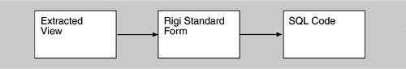

| [ Team LiB ] |
|
10.3 Database ConstructionThe extracted information is converted into a standard format for storage in a database during database construction. It is necessary to choose a database model. When doing so, consider the following:
The Dali workbench, for example, uses a relational database model. It converts the extracted views (which may be in many different formats depending on the tools used to extract them) into the Rigi Standard Form. This format is then read in by a perl script and output in a format that includes the necessary SQL code to build the relational tables and populate them with the extracted information. Figure 10.2 gives an outline of this process. Figure 10.2. Conversion of the extracted information to SQL format An example of the generated SQL code to build and populate the relational tables is shown in Figure 10.3. When the data is entered into the database, two additional tables are generated: elements and relationships. These list the extracted elements and relationships, respectively. Here, the workbench approach makes it possible to adopt new tools and techniques, other than those currently available, to carry out the conversion from whatever format(s) an extraction tool uses. For example, if a tool is required to handle a new language, it can be built and its output can be converted into the workbench format. In the current version of the Dali workbench, the POSTGRES relational database provides functionality through the use of SQL and perl for generating and manipulating the architectural views (examples are shown in Section 10.5). Changes can easily be made to the SQL scripts to make them compatible with other SQL implementations. Figure 10.3 Example of SQL code generated in Dalicreate table calls( caller text, callee text ); create table access( func text, variable text ); create table defines_var( file text, variable text ); ... insert into calls values( 'main', 'control' ); insert into calls values( 'main', 'clock' ); ... insert into accesses values( 'main', 'stat 1' ); GUIDELINESWhen constructiong the database, consider the following.
|
| [ Team LiB ] |
|